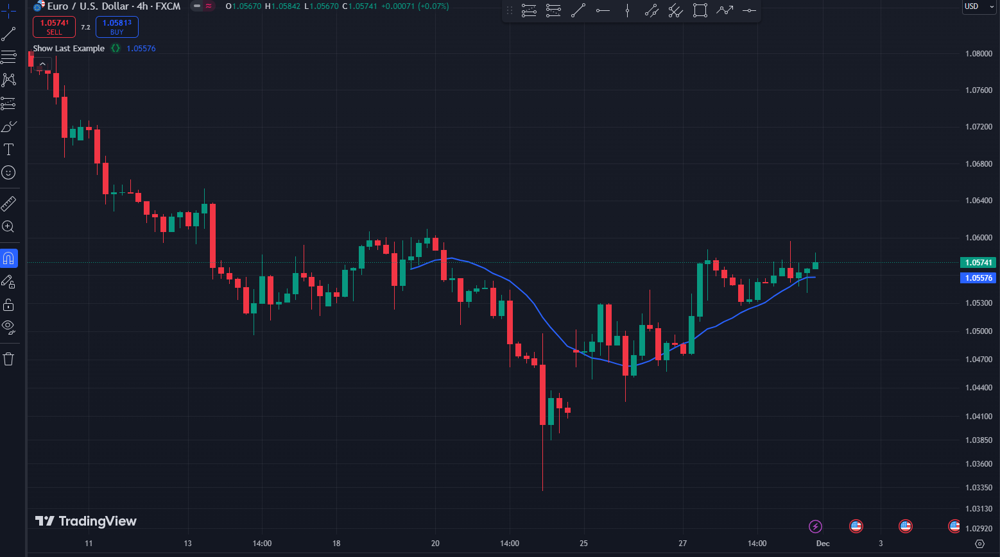

plot
Syntax:
series (series int/float)
سری دادههایی که قرار است رسم شوند. آرگومان الزامی.
title (const string)
اسم پلات
color (series color)
رنگ نمودار. میتوانید از ثوابت مانند color=color.red یا color=#ff001a و همچنین عبارات پیچیده مانند color = close >= open ? color.green : color.red استفاده کنید. آرگومان اختیاری.
linewidth (input int)
عرض خط رسم شده. مقدار پیشفرض 1 است. برای هر استایل قابل اعمال نیست.
style (input plot_style)
نوع نمودار. مقادیر ممکن عبارتند از: plot.style_line, plot.style_stepline, plot.style_stepline_diamond, plot.style_histogram, plot.style_cross, plot.style_area, plot.style_columns, plot.style_circles, plot.style_linebr, plot.style_areabr, plot.style_steplinebr. مقدار پیشفرض plot.style_line است.
trackprice (input bool)
اگر true باشد، یک خط افقی قیمت در سطح آخرین مقدار اندیکاتور نمایش داده خواهد شد. مقدار پیشفرض false است.
در اینجا یک مثال ساده از trackprice آورده شده است:

histbase (input int/float)
مقدار قیمت که بهعنوان سطح مرجع هنگام رسم نمودار با استایلهای plot.style_histogram، plot.style_columns یا plot.style_area استفاده میشود. مقدار پیشفرض 0.0 است.
offset (simple int)
نمودار را به تعداد مشخصی از کندل ها به سمت چپ یا راست جابهجا میکند. مقدار پیشفرض 0 است.
join (input bool)
اگر true باشد، نقاط نمودار با خط به هم متصل خواهند شد، که فقط برای استایلهای plot.style_cross و plot.style_circles قابل اعمال است. مقدار پیشفرض false است.
editable (const bool)
اگر true باشد، استایل نمودار در پنجره تنظیمات قابل ویرایش خواهد بود. مقدار پیشفرض true است.
show_last (input int)
اگر تنظیم شود، تعداد کندل ها (از آخرین کندل به گذشته) که باید روی نمودار رسم شوند را تعریف میکند.
در اینجا یک مثال ساده از استفاده show_last در پاین اسکریپت آورده شده است:
خروجی بصورت زیر خواهد بود:

display (input plot_display)
کنترل میکند که اطلاعات نمودار کجا نمایش داده شود. گزینههای نمایش از جمع و تفریق پشتیبانی میکنند، به این معنی که استفاده از display.all - display.status_line اطلاعات نمودار را در همه جا به جز در خط وضعیت اسکریپت نمایش میدهد. display.price_scale + display.status_line نمودار را فقط در مقیاس قیمت و خط وضعیت نمایش میدهد. زمانی که آرگومانهای نمایش مانند display.price_scale معادلهایی دارند که توسط کاربر تنظیم شدهاند، اطلاعات مربوطه فقط زمانی ظاهر میشود که تمام تنظیمات اجازه آن را بدهند. مقادیر ممکن: display.none, display.pane, display.data_window, display.price_scale, display.status_line, display.all.
اختیاری است.
مقدار پیشفرض display.all است.
format (input string)
تعیین میکند که آیا اسکریپت مقادیر نمودار را بهصورت قیمت، درصد یا مقادیر حجم فرمت میکند.
آرگومانی که به این پارامتر داده میشود، پارامتر فرمت اندیکاتور و توابع استراتژی را لغو میکند.
اختیاری است.
مقدار پیشفرض، مقدار فرمت استفادهشده توسط اندیکاتور/استراتژی است. مقادیر ممکن: format.price, format.percent, format.volume.
precision (input int)
تعداد ارقام بعد از اعشار که مقادیر نمودار در محور y پنل نمودار، خط وضعیت اسکریپت و پنجره دادهها نمایش میدهند. یک عدد صحیح غیرمنفی کمتر و یا برابر با 16 را میپذیرد. آرگومانی که به این پارامتر داده میشود، پارامتر precision اندیکاتور و توابع استراتژی را لغو میکند. زمانی که پارامتر فرمت تابع از format.volume استفاده میکند، پارامتر precision بر نتیجه تأثیری نخواهد داشت، زیرا قوانین دقت اعشاری تعریفشده توسط format.volume بر سایر تنظیمات دقت اولویت دارد. اختیاری است. مقدار پیشفرض، مقدار دقت استفادهشده توسط اندیکاتور/استراتژی است.
force_overlay (const bool)
اگر true باشد، نتایج رسمشده در پنل اصلی نمودار نمایش داده میشوند، حتی زمانی که اسکریپت یک پنل جداگانه را اشغال کرده باشد. اختیاری است. مقدار پیشفرض false است.